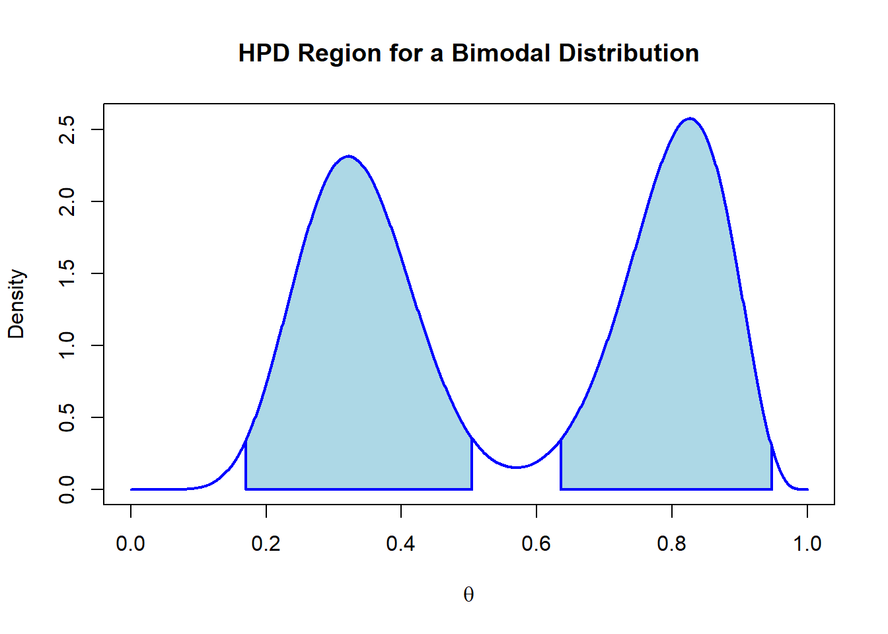

Beyond defining the posterior distribution, it is important to find a way to describe the information it provides on the plausible parameter values. The easiest way is to plot the distribution (if we have 3 or less parameter values). Alternatively, we can simulate observations from the distribution and visualize them.
There are also ways to summarize the information provided by the posterior numerically. Examples of such metrics are the usual descriptive statistics such as the mean, variance, mode etc.
5.0.1 Credible Intervals
The credible interval acts as a Bayesian version of the frequentist confidence interval. However, credible intervals provide a much more intuitive interpretation as a 95% credible interval contains the true parameter value with 95% probability. On the other hand the frequentist confidence interval says that 95% of the time, the true parameter value falls within the designated range.
5.0.1.1 Definition
In the case of a one-dimensional parameter \(\Theta \in \Omega\) with a confidence level of \(\alpha \in (0,1)\) there exists an interval \(I_\alpha\) which contains a proportion \(1 - \alpha\) of the pmf of the posterior:
\[
P(\Theta \in I_\alpha|Y = y) = 1- \alpha
\]
which is referred to as the credible interval. We usually assess the 95% credible interval. The region of parameter values that contain the credible interval is called the credible region. Applying this concept to the prior can be a useful way of selecting an informative prior, as we can find a distribution whose credible interval complements the interval found with an estimate from the observed data.
5.0.2 Equal-tailed and One-tailed Intervals
An equal-tailed interval aims at finding the credible interval between the \(\alpha/2\) and the \(1-\alpha/2\) quantiles. Most credible intervals are calculated as equal-tailed. However, this is only sensible if the posterior is unimodal and symmetric. In other cases, a one-tailed (\([0,1-\alpha]\) or \([\alpha,1]\)) may be more reasonable.
5.0.3 Examples
We can explore the concept using the gamma-poisson model from the previous section.
We can use the prior distribution to demonstrate how its influence on the posterior changes as more data is observed. The credible interval of the prior tells us the 95% of the probability mass should lie before any data is observed (i.e. the range of values we believe to be most likely). We repeat the previous even-tailed example using larger parameter values for the prior to emphasize its influence more clearly.
This example shows more clearly how the addition of more samples shifts the influence on the posterior from the prior to the observed data. This is why the choice of a non-informative prior can be very useful if we are uncertain of a plausible informative prior.
5.0.5 Highest Posterior Density
In addition to the credible interval, we can also identify the highest posterior density (HPD) region. The HPD is a confidence region \(I_\alpha\) in which the posterior density for every point within the set is greater than the posterior density for any point outside of the interval.
where \(\theta \in I_\alpha\) and \(\theta' \notin I_\alpha\) . It is therefore the smallest possible credible region in the distribution. As a result, the HPD region is not necessarily an interval, and can be a union of distinct intervals on the distribution. This makes it useful for multimodal posteriors where an even-tailed or one-tailed credible interval would not be able to fully represent the information provided. We can demonstrate its value with a bimodal posterior derived from a mixture of beta distributions.
As described, the plot shows how the credible interval ends up including a region of the distribution with low densities and omitting other regions with higher densities. The HPD region can therefore resolve this issue:
densities <-density(theta)hpd <- HDInterval::hdi(densities,allowSplit =TRUE)height <-attr(hpd, 'height')q_low1 <- hpd[1,1]q_high1 <- hpd[1,2]q_low2 <- hpd[2,1]q_high2 <- hpd[2,2]x <-seq(0,1,length =1000)y <-beta_mixture(x,a1,a2,b1,b2)plot(x,y,type ='l', col ='blue',lwd =2,xlab =expression(theta), ylab ='Density',main ="HPD Region for a Bimodal Distribution")polygon(c(q_low1,x[x >= q_low1 & x <= q_high1],q_high1),c(0,y[x >= q_low1 & x <= q_high1],0),col ='lightblue',lwd =2, border ='blue')polygon(c(q_low2,x[x >= q_low2 & x <= q_high2],q_high2),c(0,y[x >= q_low2 & x <= q_high2],0),col ='lightblue',lwd =2, border ='blue')

Here we can clearly see the advantage HPD regions provide for summarizing multimodal distributions. It also demonstrates why it is important to visualize the posterior distribution before summarizing it in terms of one-dimensional summary statistics such as a mean or median.
5.0.6 Posterior Mean
The mean of the posterior distribution is referred to as a Bayes Estimator:
Where \(k\) is \(\frac{\beta}{\beta + n}\) and shows how the posterior mean is progressively influence by the sample mean as the sample size increases. In this case, as the sample size approaches infinity, the Bayes estimator takes the form of the maximum likelihood estimator which is the sample mean for the model. This formulation also explains how the parameterization of the prior distribution affects its influence on the posterior.